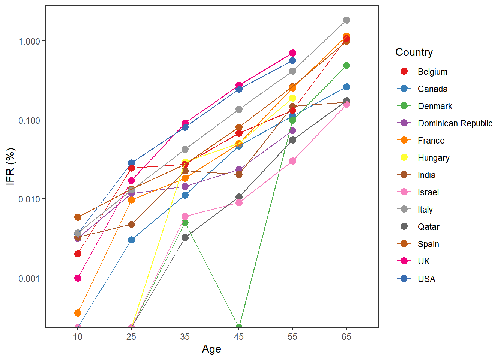

8 Reproducibility
8.1 Artikel kezien en werken met het
Een van de vaardigheden die nuttig zijn in datascience, is het bekijken van een wetenschappelijk artikel en het gebruik van de code in het artikel om exact dezelfde resultaten te verkrijgen met de dataset. Dit wordt reproduceerbaarheid genoemd.
Een van de vaardigheden die ik heb geleerd, is het beoordelen van een artikel op basis van zijn reproduceerbaarheid. Om mijn vaardigheid op het gebied van het beoordelen van reproduceerbaarheid te tonen, heb ik willekeurig een artikel uit PubMed gehaald. Je kunt dit artikel vinden (https://www.ncbi.nlm.nih.gov/pmc/articles/PMC10180718/).
In het artikel “The value of supportive care: A systematic review of cost-effectiveness of non-pharmacological interventions for dementia” heb ik de reproduceerbaarheid beoordeeld aan de hand van specifieke criteria, zoals het doel van de studie, de beschikbaarheid van gegevens, de locatie van de gegevens, en meer. Deze beoordeling stelde me in staat om de mate van transparantie van het artikel vast te stellen en of anderen in staat zouden zijn om mijn resultaten te reproduceren.
8.1.1 Reference van dit artikel:
Angelica Guzzon, Vincenzo Rebba, Omar Paccagnella, Michela Rigon, Giovanni Boniolo
8.1.2 Criteria van dit artikel
| Transparency Criteria | Definition | Response Type |
|---|---|---|
| Study Purpose | A concise statement in the introduction of the article, often in the last paragraph, that establishes the reason the research was conducted. Also called the study objective. | yes |
| Data Availability Statement | A statement, in an individual section offset from the main body of text, that explains how or if one can access a study’s data. The title of the section may vary, but it must explicitly mention data; it is therefore distinct from a supplementary materials section. | yes |
| Data Location | Where the article’s data can be accessed, either raw or processed. | All relevant data are within the manuscript and its Supporting information files. |
| Study Location | Author has stated in the methods section where the study took place or the data’s country/region of origin. | Italy |
| Author Review | The professionalism of the contact information that the author has provided in the manuscript. | Per mail |
| Ethics Statement | A statement within the manuscript indicating any ethical concerns, including the presence of sensitive data. | No |
| Funding Statement | A statement within the manuscript indicating whether or not the authors received funding for their research. | Binary |
| Code Availability | Authors have shared access to the most updated code that they used in their study, including code used for analysis. | yes |
8.1.3 Meer informatie over dit artikel
Algemeen Doel van de Studie
Het algemene doel van de studie is om de waarde van ondersteunende zorg te onderzoeken door middel van een systematische review van de kosteneffectiviteit van niet-farmacologische interventies voor dementie.
Methoden Voor de methoden van de studie werden systematische literatuuronderzoeken uitgevoerd tussen februari 2019 en december 2021. Verschillende databases werden doorzocht, waaronder PubMed, Cochrane Library, CENTRAL, Embase en PsycINFO. De zoekstrategie was gebaseerd op de PRISMA 2020-aanbevelingen. Studies gepubliceerd tot december 2021 werden overwogen, zonder ondergrens voor de publicatiedatum. Vijf categorieën van ondersteunende zorgstrategieën werden onderscheiden.
Resultaten Van de 5,479 geïdentificeerde artikelen voldeden 39 aan de inclusiecriteria. Deze studies analyseerden 35 ondersteunende zorgprogramma’s op verschillende momenten in het dementiezorgtraject. Elf studies gaven bewijs van hoge kosteneffectiviteit voor zeven interventies, waaronder multicomponent-interventies, indirecte interventies, interventies gericht op zorgverleners en gemeenschapsgerichte programma’s.
8.1.4 Werken met code van artikel (R code paper)
In de wereld van data science is het ook een nuttige vaardigheid om te werken met open science artikelen. Deze artikelen tonen hun code en laten zien hoe ze aan hun gegevens zijn gekomen. Mijn keuze viel op het artikel ‘Infection fatality rate of COVID-19 in community dwelling elderly’ in dit link: https://osf.io/w3rzd/.
Deze R-code lijkt te zijn geschreven voor een analyse van de infectie-sterftecijfers (IFR) van COVID-19 in verschillende leeftijdsgroepen, met speciale aandacht voor oudere populaties. Het script verwerkt gegevens uit een Excel-bestand (ifr-data3-younger.xlsx) en voert een reeks bewerkingen en analyses uit.
In termen van leesbaarheid van de code zou ik deze een 3 op 5 geven. Want ik heb errors geregen vanwege niet alle benodigde libraries zijn staan in de code, en het plot zelf is beetje moeilijk om te lezen want daar staan verschillende lijnen die sneden aan elkaar dus de plot niet goed leesbaar.
Als ik zou moeten schalen hoe gemakkelijk de plot is om te reproduceren waarbij 1 heel moeilijk is, en 5 heel gemakkelijk, zou ik het een 5 geven. Dit komt omdat het enige dat veranderd moest worden het pad voor het invoerbestand was.
today <- "2021-10-18" #Set today's date in format YYYY-MM-DD
# Load files ----
agebins <- readxl::read_xlsx("C:/Users/Laptop/Downloads/Workflow-Portfolio/data/ifr-data3-younger.xlsx")
# Load packages ----
library(dplyr)
library(ggplot2)
library(RColorBrewer)
### Data management ----
# infected_agebins ----
#Number of infected people in the age bin for date 1.
#Estimated by multiplying the adjusted estimate (and if unavailable, the unadjusted) of
#seroprevalence in the age bin with pop_agebins.
library(rlang)##
## Attaching package: 'rlang'## The following objects are masked from 'package:purrr':
##
## %@%, flatten, flatten_chr, flatten_dbl, flatten_int, flatten_lgl,
## flatten_raw, invoke, spliceagebins <- purrr::modify_at(agebins, c("adj_sero_agebins", "crude_sero_agebins", "sero_agebins_g1", "sero_agebins_g2", "sero_agebins_g3", "pop_agebins_g1", "pop_agebins_g2", "pop_agebins_g3", "sero_agebins_g4", "pop_agebins_g4", "pop_agebins", "number_sampled"), ~as.numeric(.x))
library(dplyr)
agebins <- mutate(agebins, infected_agebins = case_when(
!is.na(adj_sero_agebins) ~ adj_sero_agebins/100*pop_agebins,
!is.na(sero_agebins_g4) ~
(sero_agebins_g4/100*pop_agebins_g4 +
sero_agebins_g3/100*pop_agebins_g3 +
sero_agebins_g2/100*pop_agebins_g2 +
sero_agebins_g1/100*pop_agebins_g1) /
(pop_agebins_g4 + pop_agebins_g3 +
pop_agebins_g2 + pop_agebins_g1) * pop_agebins,
!is.na(sero_agebins_g3) ~
(sero_agebins_g3/100*pop_agebins_g3 +
sero_agebins_g2/100*pop_agebins_g2 +
sero_agebins_g1/100*pop_agebins_g1) /
(pop_agebins_g3 +
pop_agebins_g2 + pop_agebins_g1) * pop_agebins,
!is.na(sero_agebins_g2) ~
(sero_agebins_g2/100*pop_agebins_g2 +
sero_agebins_g1/100*pop_agebins_g1) /
(pop_agebins_g2 + pop_agebins_g1) * pop_agebins,
!is.na(crude_sero_agebins) ~ crude_sero_agebins/100*pop_agebins,
TRUE ~ NA_real_
))
# deaths_agebins_date1 ----
#COVID-19 deaths in age bin for date 1, estimated using deaths_agebins_date2, age_date2,
#and deaths_date1
#NAs introduced, that's OK
agebins <- mutate(agebins, deaths_agebins_date1 = case_when(
age_date2 == "Not applicable" ~ as.numeric(deaths_agebins_date2),
!is.na(as.numeric(deaths_agebins_date2)) ~
as.numeric(deaths_agebins_date2)/as.numeric(age_date2)*as.numeric(deaths_date1),
TRUE ~ NA_real_
))## Warning: There were 2 warnings in `mutate()`.
## The first warning was:
## ℹ In argument: `deaths_agebins_date1 = case_when(...)`.
## Caused by warning:
## ! NAs introduced by coercion
## ℹ Run `dplyr::last_dplyr_warnings()` to see the 1 remaining warning.# ifr_uncorr_agebins ----
#IFR in age bins, uncorrected
agebins <- mutate(agebins, ifr_uncorr_agebins = case_when(
infected_agebins == 0 ~ 0,
!is.na(deaths_agebins_date1) ~ deaths_agebins_date1/infected_agebins,
TRUE ~ NA_real_
))
# ifr_corr_agebins ----
#IFR in age bins, corrected
agebins <- mutate(agebins, antibody_type2 = case_when(
grepl("total|pan.Ig|IgG, IgM, IgA", antibody_type, ignore.case = T) ~ "IgG/IgM/IgA",
grepl("IgG and.or IgM|IgG, IgM", antibody_type, ignore.case = T) ~ "IgG/IgM",
grepl("missing|unclear", antibody_type, ignore.case = T) ~ "Missing/Unclear",
TRUE ~ antibody_type
))
agebins <- mutate(agebins, ifr_corr_agebins = case_when(
grepl("IgG.IgM.IgA|missing", antibody_type2, ignore.case = T) ~
ifr_uncorr_agebins,
grepl("^IgG$", antibody_type2, ignore.case = T) ~ ifr_uncorr_agebins*0.9*0.9,
grepl("IgG.IgM", antibody_type2, ignore.case = T) ~ ifr_uncorr_agebins*0.9
))
# Mid-point of age bin ----
#For Figureagebins <- purrr::modify_at(agebins, c("upper_age", "lower_age"),
~as.numeric(.x))
agebins$midpoint <- round(agebins$lower_age +
(agebins$upper_age-agebins$lower_age)/2, digits = 1)
#Delete age bins that are not eligible
agebins$width <- agebins$upper_age-agebins$lower_age
agebins <- mutate(agebins, included_plot = case_when(
grepl("Not include", comment, ignore.case = T) ~ "No",
# grepl("No", filter_main_analysis, ignore.case = T) ~ "No", #Fix: delete if original set is main set for this analysis
width < 20 ~ "Yes",
TRUE ~ "No"
))
agebins <- subset(agebins, included_plot == "Yes")
# Calculation of medians ----
# location2
agebins <- mutate(agebins, location2 = case_when(
grepl("England|UK|Scotland", location) ~ "UK",
grepl("Canada", location) ~ "Canada",
grepl("India", location) ~ "India",
grepl("Qatar", location) ~ "Qatar",
grepl("France", location) ~ "France",
TRUE ~ location
))
#1. Separate datasets per age bin
agebins0_19 <- filter(agebins, midpoint<20)
agebins20_29 <- filter(agebins, midpoint>19.9 & midpoint<30)
agebins30_39 <- filter(agebins, midpoint>29.9 & midpoint<40)
agebins40_49 <- filter(agebins, midpoint>39.9 & midpoint<50)
agebins50_59 <- filter(agebins, midpoint>49.9 & midpoint<60)
agebins60_69 <- filter(agebins, midpoint>59.9 & midpoint<70)
#test <- agebins0_19[c("lower_age", "upper_age", "midpoint")]
#test <- agebins20_29[c("lower_age", "upper_age", "midpoint")]
#test <- agebins30_39[c("lower_age", "upper_age", "midpoint")]
#test <- agebins40_49[c("lower_age", "upper_age", "midpoint")]
#test <- agebins50_59[c("lower_age", "upper_age", "midpoint")]
#test <- agebins60_69[c("lower_age", "upper_age", "midpoint")]
#2. Sample size weighted averages for same country and age bin
agebins0_19 <- group_by(agebins0_19, location2)
n_groups(agebins0_19)## [1] 13agebins0_19 <- mutate(agebins0_19, weight = case_when(
!is.na(number_sampled) ~ number_sampled/sum(number_sampled),
TRUE ~ 1
))
agebins0_19 <- mutate(agebins0_19, step = ifr_uncorr_agebins*weight)
agebins0_19 <- mutate(agebins0_19, ifr_country_weighted = sum(step))
agebins0_19 <- ungroup(agebins0_19)
agebins0_19$newmidpoint <- "10"
#test <- agebins0_19[c("location2", "ifr_uncorr_agebins", "ifr_country_median", "number_sampled", "weight", "ifr_country_weighted")]
agebins20_29 <- group_by(agebins20_29, location2)
n_groups(agebins20_29)## [1] 13agebins20_29 <- mutate(agebins20_29, weight = case_when(
!is.na(number_sampled) ~ number_sampled/sum(number_sampled),
TRUE ~ 1
))
agebins20_29 <- mutate(agebins20_29, step = ifr_uncorr_agebins*weight)
agebins20_29 <- mutate(agebins20_29, ifr_country_weighted = sum(step))
agebins20_29 <- ungroup(agebins20_29)
agebins20_29$newmidpoint <- "25"
#test <- agebins20_29[c("location2", "ifr_uncorr_agebins", "ifr_country_median", "number_sampled", "weight", "ifr_country_weighted")]
agebins30_39 <- group_by(agebins30_39, location2)
n_groups(agebins30_39)## [1] 13agebins30_39 <- mutate(agebins30_39, weight = case_when(
!is.na(number_sampled) ~ number_sampled/sum(number_sampled),
TRUE ~ 1
))
agebins30_39 <- mutate(agebins30_39, step = ifr_uncorr_agebins*weight)
agebins30_39 <- mutate(agebins30_39, ifr_country_weighted = sum(step))
agebins30_39 <- ungroup(agebins30_39)
agebins30_39$newmidpoint <- "35"
#test <- agebins30_39[c("location2", "ifr_uncorr_agebins", "ifr_country_median", "number_sampled", "weight", "ifr_country_weighted")]
agebins40_49 <- group_by(agebins40_49, location2)
n_groups(agebins40_49)## [1] 13agebins40_49 <- mutate(agebins40_49, weight = case_when(
!is.na(number_sampled) ~ number_sampled/sum(number_sampled),
TRUE ~ 1
))
agebins40_49 <- mutate(agebins40_49, step = ifr_uncorr_agebins*weight)
agebins40_49 <- mutate(agebins40_49, ifr_country_weighted = sum(step))
agebins40_49 <- ungroup(agebins40_49)
agebins40_49$newmidpoint <- "45"
#test <- agebins40_49[c("location2", "ifr_uncorr_agebins", "ifr_country_median", "number_sampled", "weight", "ifr_country_weighted")]
agebins50_59 <- group_by(agebins50_59, location2)
n_groups(agebins50_59)## [1] 13agebins50_59 <- mutate(agebins50_59, weight = case_when(
!is.na(number_sampled) ~ number_sampled/sum(number_sampled),
TRUE ~ 1
))
agebins50_59 <- mutate(agebins50_59, step = ifr_uncorr_agebins*weight)
agebins50_59 <- mutate(agebins50_59, ifr_country_weighted = sum(step))
agebins50_59 <- ungroup(agebins50_59)
agebins50_59$newmidpoint <- "55"
#test <- agebins50_59[c("location2", "ifr_uncorr_agebins", "ifr_country_median", "number_sampled", "weight", "ifr_country_weighted")]
agebins60_69 <- group_by(agebins60_69, location2)
n_groups(agebins60_69)## [1] 9agebins60_69 <- mutate(agebins60_69, weight = case_when(
!is.na(number_sampled) ~ number_sampled/sum(number_sampled),
TRUE ~ 1
))
agebins60_69 <- mutate(agebins60_69, step = ifr_uncorr_agebins*weight)
agebins60_69 <- mutate(agebins60_69, ifr_country_weighted = sum(step))
agebins60_69 <- ungroup(agebins60_69)
agebins60_69$newmidpoint <- "65"
#test <- agebins60_69[c("location2", "ifr_uncorr_agebins", "ifr_country_median", "number_sampled", "weight", "ifr_country_weighted")]
#3. Add to main dataset
agebins_new <- rbind(agebins0_19, agebins20_29, agebins30_39, agebins40_49, agebins50_59, agebins60_69)
agebins_new <- group_by(agebins_new, newmidpoint)
agebins_new <- filter(agebins_new, !duplicated(location2))
agebins_new <- mutate(agebins_new, ifr_mdn_weighted = median(ifr_country_weighted))
n_groups(agebins_new)## [1] 6agebins_new <- ungroup(agebins_new)
test <- select(agebins_new, c("newmidpoint", "ifr_mdn_weighted"))
test$ifr_mdn_weighted <- test$ifr_mdn_weighted*100
test <- subset(test, !duplicated(ifr_mdn_weighted))
### Output ----
# "IFR in younger age-strata" ----
length(unique(agebins$study))## [1] 21## [1] 13## # A tibble: 6 × 2
## newmidpoint ifr_mdn_weighted
## <chr> <dbl>
## 1 10 0.000998
## 2 25 0.00967
## 3 35 0.0229
## 4 45 0.0503
## 5 55 0.149
## 6 65 0.491## [1] 13## [1] 13## [1] 13## [1] 13## [1] 13## [1] 9# Output for the purposes of proofreading ----
writexl::write_xlsx(agebins_new, paste0("ifr-younger-all-variables-", today, ".xlsx"))
# Figure ----
agebins_new <- group_by(agebins_new, newmidpoint)
n_groups(agebins_new)## [1] 6agebins_new <- filter(agebins_new, !duplicated(location2))
agebins_new <- ungroup(agebins_new)
ageplot1 <- ggplot(agebins_new, aes(x = newmidpoint, y = ifr_country_weighted*100))+
geom_point(aes(color=location2), size=3)+
theme_bw()+
geom_line(aes(group=location2, color=location2))+
theme(panel.grid = element_blank())+
labs(y = "IFR (%)", x = "Age", color="Country")+
scale_color_manual(values = c(brewer.pal(9, "Set1"),
#rev(brewer.pal(8, "Dark2")),
rev(brewer.pal(8, "Accent"))))+
scale_y_log10()+
theme(strip.background = element_blank())
ageplot1## Warning: Transformation introduced infinite values in continuous y-axis
## Transformation introduced infinite values in continuous y-axis
## png
## 2